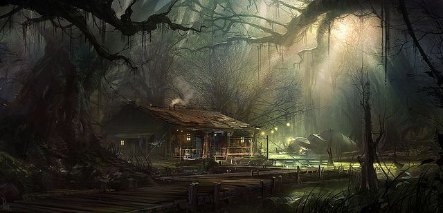
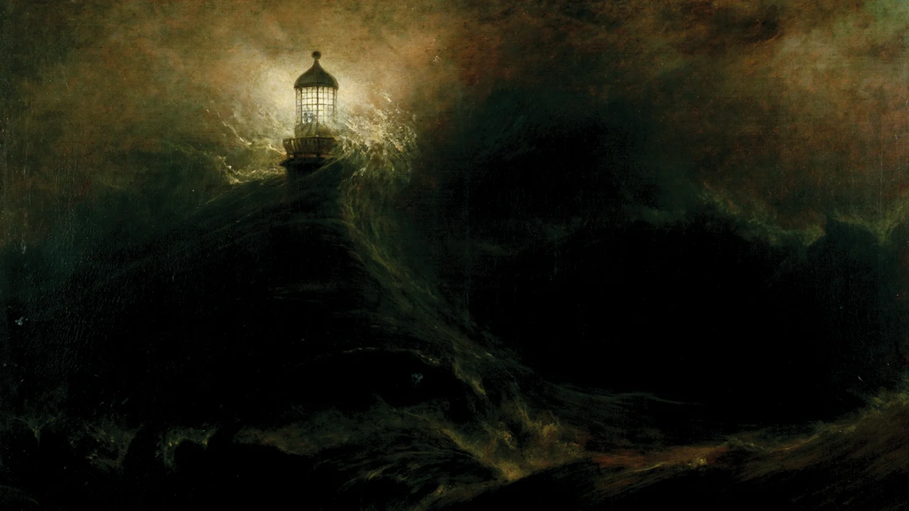

The Coterie of [REDACTED] for the Pneumatic Gully of
the Obsequious-Others
There are no homes here. Only houses. One is yours.

The House of Pleasure
This place is not one of pleasure.
Clay-borne of rancid waters.
Reminds the pnuema of fancy.
The House of Peace
This place is not one of peace.
Traitor-borne of stale waters.
Reminds the pneuma of convention.
The House of Prosperity
This place is not one of prosperity.
Habitué-borne of sparkling waters.
Reminds the pneuma of desire.

The House of Penance
This place is not one of penance.
Apostle-borne of vermillion waters.
Reminds the pneuma of hope.